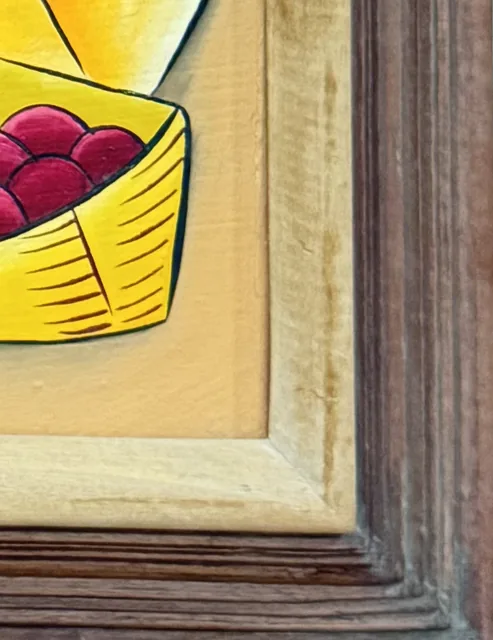

Paintings & Prints
Caribbean Market Women with Baskets, Fritz Plock, Signed, Framed
Fritz Plock · late 20th century
Price Upon Request

About the Item
Fritz Plock. A vivid folk-modernist market scene in which three elongated figures with sharply faceted faces stand close together, balancing woven baskets of green fruit, magenta berries and yellow grain. The whole design is drawn in heavy black outline and filled with flat, high-chroma colour - tangerine, lemon, purple, emerald and turquoise - over a bare tan ground that is left showing as the earth. Sprays of orange leaves fan across the lower left corner and the sky is a clean gradient of turquoise blue. The handling is smooth and poster-like, with no visible impasto. Medium: acrylic on canvas. Signed lower left of the canvas, in black, reading "Fritz Plock". Inscribed on the reverse or mount: Fritz Plock. Condition: Paint surface clean and unbroken; the frame has light rubbing at the corners.
Details
- Creator:
- Fritz Plock
- Creation Year:
- late 20th century
- Dimensions:
- Height: 21.25 in (53.98 cm)
Width: 16.4 in (41.66 cm)
outside of frame - Medium:
- acrylic on canvas
- Period:
- 20Th
- Condition:
- Offered in the condition shown in the photographs.
- Reference Number:
- VO-73
- Documentation:
- no certificate photographed
- Gallery Location:
- Fritz Plock